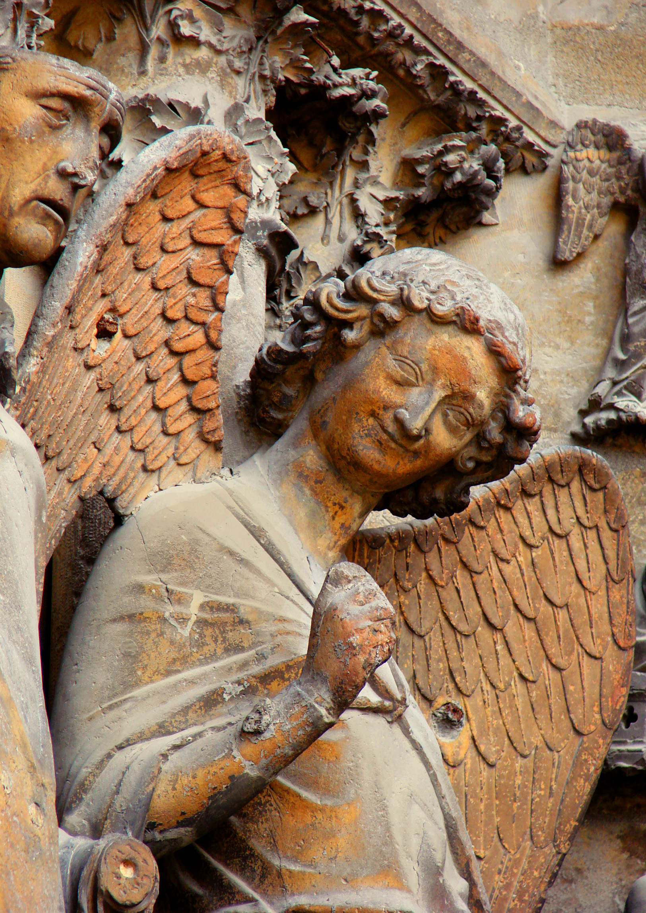
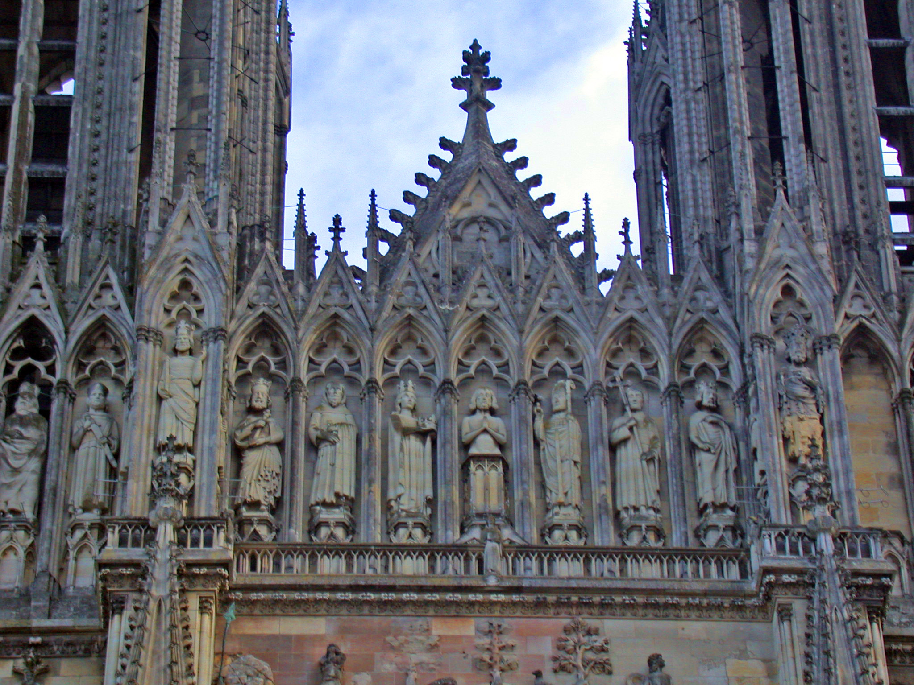
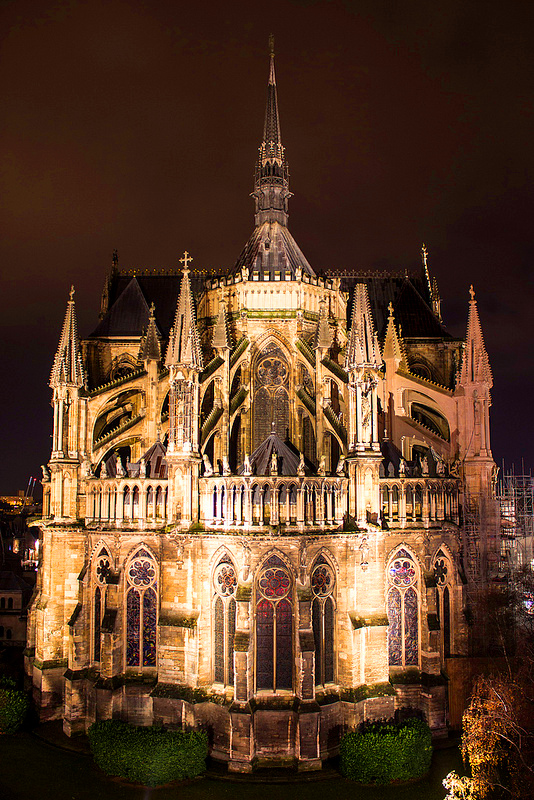
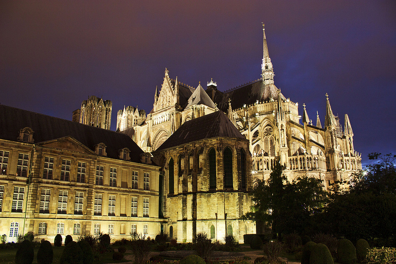
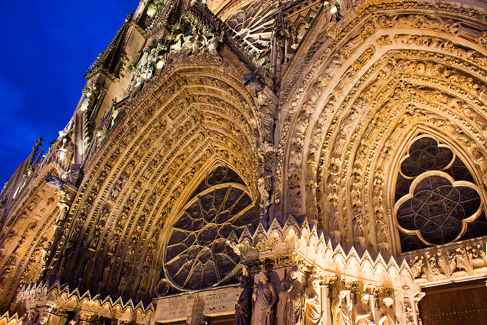
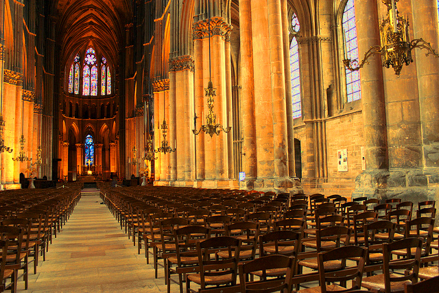
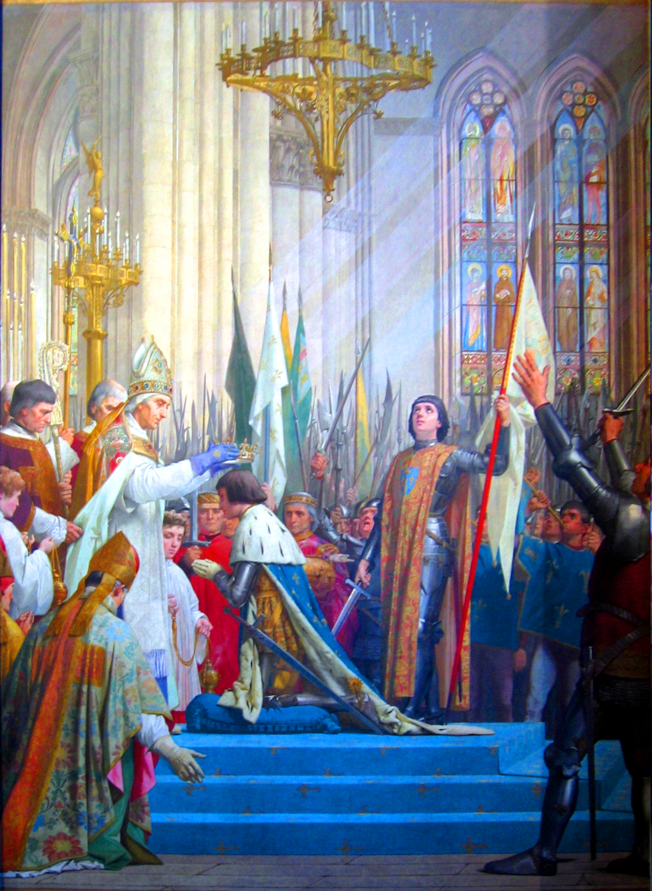
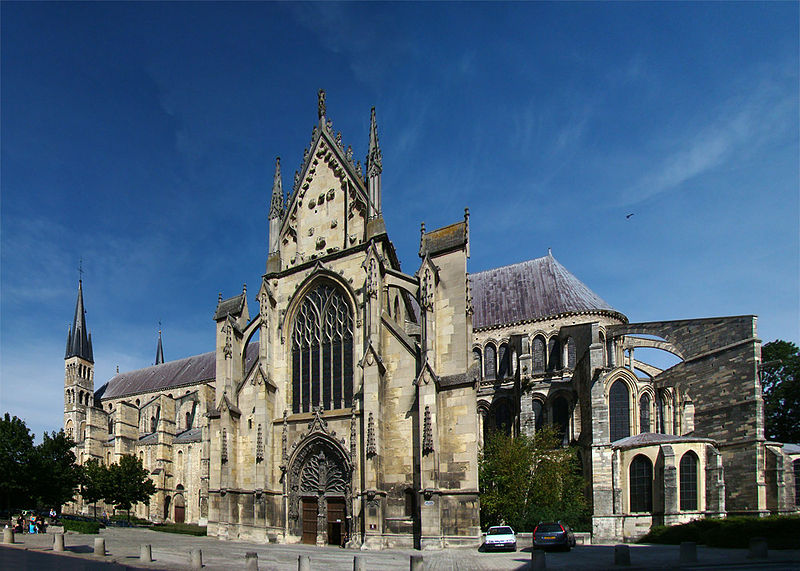
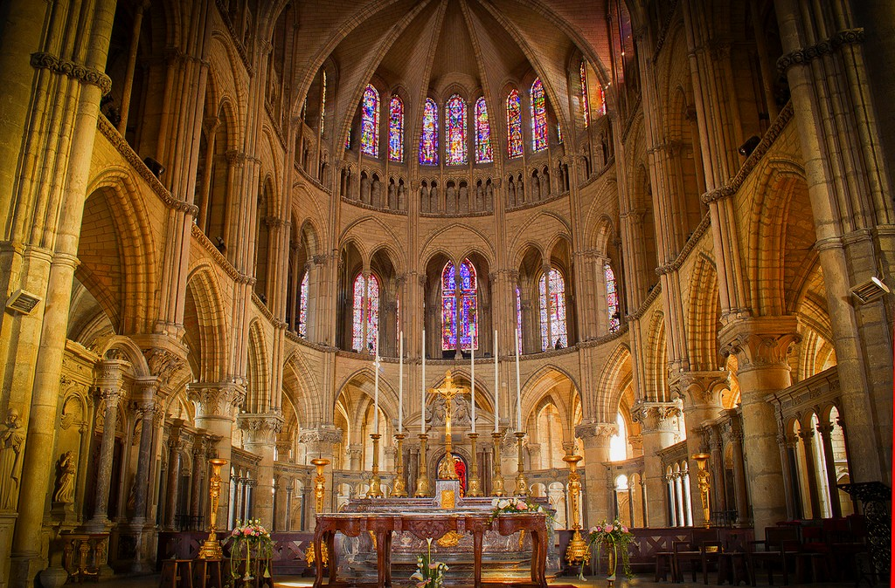
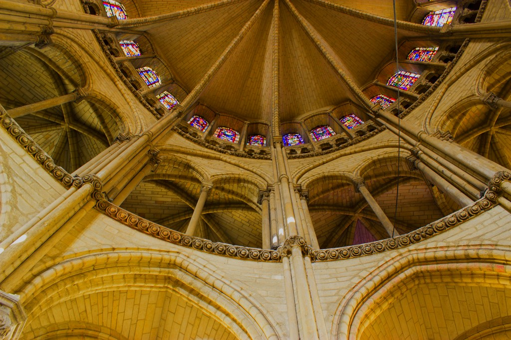

La cathédrale Notre-Dame de Reims est une cathédrale catholique romaine située à Reims, en Champagne-Ardenne. Sa construction ayant commencé au début du xiiie siècle, elle est postérieure à Notre-Dame de Paris et Notre-Dame de Chartres, mais antérieure aux cathédrales Notre-Dame de Strasbourg, Notre-Dame d'Amiens et à celle de Beauvais. Consacrée à la Vierge Marie, la cathédrale a été achevée au xive siècle. Il s'agit de l'une des réalisations majeures de l'art gothique en France, de par son architecture et sa statuaire qui ne compte pas moins de 2 303 statues.
 
Elle est inscrite au patrimoine mondial de l’UNESCO depuis 1991 et est un haut lieu du tourisme champenois. Lors de l’année 2007, elle a accueilli pas moins de 1 500 000 visiteurs. Il est important de préciser que cette cathédrale a subie deux incendies, l'un en 1210 et l'autre en 1481. En effet, les Annales de saint Nicaise rapportent qu'en 1210 « l'église de Reims a brûlé en la fête Saint-Jean-devant-la-Porte-latine », le 6 mai, le même jour qu'une éclipse de lune. De plus le 24 juillet 1481, un nouvel incendie, né de la négligence d'ouvriers travaillant à la toiture de l'édifice, prend dans les combles de la cathédrale. Il détruit la charpente, puis le grand clocher central ainsi que les galeries à la base du toit. Le plomb coulant de la toiture achève de détériorer le monument. Le chantier reprend néanmoins rapidement. Les rois Charles VIII puis Louis XII, sacrés dans la cathédrale, apportent un soutien financier à la reconstruction, à la différence de leur prédécesseur Louis XI. Ils accordent en particulier un octroi royal, correspondant à une partie de lagabelle. En remerciement, le nouveau toit est surmonté de fleurs de lys et les armoiries royales sont « apposées en haut du chevet ». Ce bénéfice est néanmoins suspendu en 1516, les travaux sont arrêtés avant l'achèvement des flèches.
 
 
La pierre utilisée pour la construction est majoritairement un calcaire du Lutétien moyen provenant de carrières proches de Reims et appelé calcaire de Courville ou pierre de Courville. Le revers du portail central est célèbre pour la sculpture dite de la Communion du Chevalier. La cathédrale de Reims a une très riche statuaire qui est supérieure à celle de toutes les autres cathédrales européennes. Le nombre de statues qui l'ornent, s'élève en effet à 2303. On peut observer notamment sur le portail gauche la statue de l'Ange au Sourire, emblème de la ville de Reims, et celle de la Reine de Saba.

- 1027 : Henri Ier par Ebles Ier de Roucy.
- 1059 : Phqilippe Ier par Gervais de Belleme.
- 1129 : Philippe de France par Renaud II.
- 1131 : Louis VII par Innocent II.
- 1179 : Philippe II par Guillaume aux blanches mains.
- 1223 : Louis VIII par Guillaume de Joinville.
- 1226 : Louis IX par Jacques de Bazoches.
- 1271 : Philippe III par Milon de Bazoches.
- 1286 : Philippe IV par Pierre Barbet.
- 1315 : Louis X par Robert de Courtenay-Champignelles.
- 1317 : Philippe V par Robert de Courtenay-Champignelles.
- 1322 : Charles IV par Robert de Courtenay-Champignelles.
- 1328 : Philippe VI par Guillaume de Trie.
- 1350 : Jean II par Jean II de Vienne.
- 1364 : Charles V par Jean III de Craon
- 1380 : Charles VI par Richard Picque.
- 1429 : Charles VII par Renault de Chartres.
- 1461 : Louis XI par Jean II Jouvenel des Ursins.
- 1484 : Charles VIII par Pierre de Laval.
- 1498 : Louis XII par Guillaume Briçonnet.
- 1515 : François Ier par Robert de Lenoncourt.
- 1547 : Henri II par Charles de Lorraine.
- 1559 : François II par Charles de Lorraine.
- 1561 : Charles IX par Charles de Lorraine.
- 1575 : Henri III par Louis II de Guise.
- 1610 : Louis XIII par François de Joyeuse.
- 1654 : Louis XIV par Simon Legras.
- 1722 : Louis XV par Armand Jules de Rohan-Guémené.
- 1775 : Louis XVI par Charles Antoine de La Roche-Aymon.
- 1825 : Charles X par Jean-Baptiste de Latil.

La basilique Saint-Remi est un édifice religieux chrétien, construit aux alentours de l'An mil, dans la ville de Reims (Champagne). Après la cathédrale, qu'elle égale presque en taille, la basilique Saint-Remi est l'église la plus célèbre de Reims. Elle fut longtemps rattachée à une importante abbaye, l'abbaye Saint-Remi de Reims.

L'édifice adopte le plan de la basilique. La nef et les transepts, de style roman, sont les plus anciens, tandis que la façade du transept sud est la partie la plus récente. Le chœur et l'abside remontent quant à eux aux XIIe et XIIIe siècles. Les monuments de valeur qui se trouvaient au sein de l'église par le passé ont été pillés durant la Révolution ; la tombe du saint est une reconstitution du XIXe siècle. Il reste toutefois des vitraux du XIIe siècle dans l'abside et les tapisseries offertes pas Rbert de Lenoncourt, exposées dans le musée installé dans l'ancienne abbaye. La basilique Saint-Remi ainsi que l'abbaye bénédictine attenante du XVIIIe siècle (musée Saint-Remi, collections gallo-romaines notamment) sont classées au patrimoine mondial par l'UNESCO. Le 1er août 1918, elle abritait un hôpital, des obus allemands s'abattent sur la basilique, le toit s'enflamme et s'effondre, les fausses voûtes en bois et plâtre s'effondrent sur toute la longueur de la nef et une partie du transept. Les murs sont transpercés, le sol est couvert de décombres et il ne reste plus que les transmissions de l'orgue Brisset. Les dégâts sont aggravés par les intempéries de l'hiver, qui voit ensuite s'effondrer les bas-côtés sud, en avril 1919, tandis que la pluie et la tempête abattent le pignon nord du transept en 1920.
 